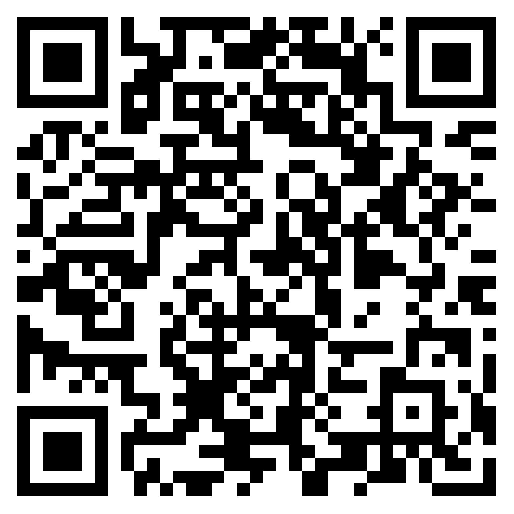

Email confirmed
You’ll be redirected to Jazari One to finish creating your account. If nothing happens, tap the button below.
Open Jazari OneEmail confirmed
Scan this code with your phone to complete creating your account in Jazari One.

© 2026 Jazari One. All rights reserved.